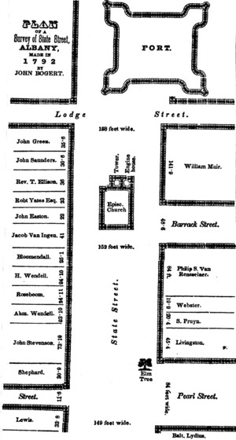

|
 The image shown here is a fair-quality reproduction of an engraving of a map of upper State Street made by city surveyor John Bogert in 1792. It is presented here to further articulate inhabitation of the upper blocks of Albany's main street at the end of the eighteenth-century. Note the elm tree, lot dimensions, varied widths of the streets, and the fire engine in the rear of St. Peters Church. Note also the reference to Lewis's Tavern on the southeastern corner of State and Washington (S. Pearl). Did it share space with the old Schuyler/Staats house? Compare this map to the city map made by New York State Surveyor General Simeon De Witt at about the same time. The census of 1790 corrolates closely (but in reverse order) with this engraving. In connection with the foregoing, a diagram of the section of State street lying hetween Pearl and Lodge streets, is introduced. The original map appears to have heen made from actual survey by John Bogert, in 1792. The dimensions of the lots upon State street, and the name of the owners at that time, are given; together with the location of the Episcopal Church and the Fort, edifices which disappeared half a century ago. The old English Church, which stood in the centre of State street opposite Barrack, now Chapel street, was erected in 1715. It was alluded to by Kalm thirty-four years afterwards as heing built of stone, without a steeple, and standing directly under the Fort. The tower on the west end was a distinct structure, erected after 1750. The bell was cast in England, and is still used in St Peter's Church, hearing this inscription: "St. Peter's Church in Albany, 1751 ; J. Ogilvie, minister; J. Stevenson, E. Collins, wardens." The Rev. Thomas Ellison was the last rector who officiated in the old church. We hope to have it in our power to present a history of this church in the next volume. On the northwest corner of the church, and directly in contact with it, stood the City Fire Engine House. The engine kept within it was the only one which the authorities provided for the protection of the city against fire. It is represented to have heen a very superior machine, and was one of the only two manufactured by the elder John Mason, a celebrated machinist of Philadelphia. Its counterpart was for a long time in possession of the Diligent Fire Company of that city. As we contemplate the map, and reflect upon the changes which have heen wrought upon the owners and occupants of these lots during the last half century, a melancholy yet agreeable interest is awakened. A multitude of thoughts will present themselves to the octogenarian, skilled in antique lore and the traditions of early times, of scenes that will remain unwritten. Beginning at the foot of the map on the south side, the name of Mr. Lewis marks the site of the Cily Tavern, then, and until the Tontine was opened by Matthew Gregory, the great house of the day. It was removed to open the street, which was a narrow arched passage way at this time, having a gate to protect the entrance into the street helow, known as Washington street, now South Pearl. A part or the whole of the Shepard lot was subsequently taken in extending the breadth of the street. The street in the rear of the lots above Pearl street, is described in a Dutch deed of 1680, given by Dr. Abram Staats to the Lutheran Church, as " the old road helonging to Mr. Pretty, Jacob Sanders, Johannes Wendell, Myndert Harmense, and Hendrick Cuyler. Mr. Pretty was the first sheriff under the English charter, and occupied the whole or a part of the large lot afterwards owned hy Mr. John Stevenson. Of the Wendell house we have already spoken. In the rear of it was the printing office of Solomon Southwick, where the Albany Register was issued, and the state printing performed, by him, and is still standing. [286] The house and lot designated as the premises of Mr. Rosehoom, were for a time the residence of Thomas Shipboy, another eminent merchant, who died in the year 1798. The old edifice is concealed behind a modern front, but its zuydelyk aspect indicates its origin unmistakenly. Mr. Shipboy afterwards occupied the house No. 56 State street, subsequently the store of the late Christian Miller — the strong walls of which have also heen carried up so as to present the appearance of a modern structure. The two next are the site of the American Hotel, belonging to the descendants of the late William James. They were occupied by the great printing and publishing house of the Hosfords, which went down in 1825. The Van Ingen property is now the residence of Erastus Corning. Esq. The next belongs to the estate of the late William Gould, who erected a graceful modern edifice, and acquired a handsome fortune upon the premises as a law hookseller. The house of Judge Yates is still standing, and was occupied by his son, John Van Ness Yates, of distinguished memory, until his death, which occurred a few years ago. The house occupied by Mr. Ellison is also still standing, looking a little the worse for its age, although it never had much pretension to elegance. It is now the property of Philip Wendell, Esq.; the upper part occupied by him as a dwelling, and the lower part has long been the well known chair factory of J. McChesney. The late Killian K. Van Rensselaer married a descendant of Mr. John Sanders, of Schenectady, and inherited the lot which hears the name of the latter on the map. Mr Van Rensselaer erected a large dwelling. house upon the premises, in which he resided till his death a few years ago, since which it has heen occupied hy Mrs. Brinckerhoff as a ladies' boarding school. A large wooden building, which was built hefore the revolution, and we believe for a time used as a tavern, occupied the corner of John Green. In this building the Albany Academy was opened in 1815. It was burnt in 1847; when a substantial brick edifice was erected upon its site, by the heirs of the late Killian K. Van Kensselaer. to whom the property belongs. The position of the Fort is helieved to he very accurately given. The northeast bastion occupied the ground where the Episcopal Church now stands. Its foundations were as high as the lop of that church. It was the fourth place selected for a fort, and was first, it appears, enclosed by stockades merely. The diagram here given was made by the Rev. John Miller, a chaplain of the English army, in 1695, when it was surrounded hy a ditch. It is purposed at a future day to give a view of the Fort taken at a subsequent period, when it had undergone important improvements, and to prepare as full a history of it as it may he possible to gather at this day. [287] The square in the occupation of William Muir was long since divided up for residences and shops. The house of the worthy old mayor, Philip S. Van Rensselaer, younger brother of the patroon is still occupied by his widow. The next three lots form the well-known Webster Corner. After the memorable fire of 1793, in which the printing office of Mr. Webster was consumed, he took the white house on the Livingston lot, which stands there at this day. The two lots above it were purchased and built upon by himself and brother George, where they resided during their lives. The corner property also came into their hands and became the theatre of a very extensive printing and publishing business. In the palmy days of the establishment, it was customary twice a week to load with school and other books for the western country, one of those old-fashioned two-story freight-wagons, so common before the opening of the canal. There were no heresies in those days against Webster's Spelling Book. Imtimately associated with the reminiscences of this corner, is the elm tree which throws its rugged arms across the street, and enjoys so extraordinary a degree of popular favor, as to defy the plodding traffickers below, whose signs are obscured by its foliage, to lop a limb or touch a twig. This corner was the property of Philip Livingston, one of the signers of the Declaration of Independence; who was born in Albany in 1716; and the earliest reminiscence we have of the tree, is the circumstance of his having, when a young man, rebuked a sailor, whom he observed preparing his knife to cut it down, then a mere switch. From this datum we may infer that the elm is more than a hundred years old. The Lydius Corner, opposite, was occupied at the time of the survey [288] by a very eccentric old gentleman, Balthazar Lydius. He died on the 17th November, 1815, aged 78, and was the last male descendant or his family, which was ancient and respectable. The house in which he lived was imported from Holland : bricks, woodwork, tiles, and ornamental irons, with which it was profusely adorned, expressly for the use of the Rev. Gideon Schaets, who arrived in 1652. The materials for the house arrived simultaneously with the old bell and pulpit, 1657. It was supposed to he the oldest brick building in North America at the time of its removal in 1832. The modern Apothecaries Hall was erected by Mr. George Dexter upon its site. Engraving printed in Joel Munsell's Annals of Albany, volume 1 and also in his ALBANY ANNUAL REGISTER CONTAINING A DlRECTORY TO THE PLACES OF BUSlNESS AND PUBLlC lNSTlTUTlONS, CONTRIBUT1ONS TO THE H1STORY AND ANTIQUITIES OF THE CITY, AND OTHER MATTERS OF INTEREST (Albany, 1850), and now available online. This map and text has been copied from that resource. Bogert produced other street maps that were engraved and printed by Munsell in a number of forms. The accompanying narrative is included here for descriptive purposes. Unfortunately, neither the original manuscript map nor a less distorted engraving seems to be available! Follow this link to a more useful presentation of the upper State Street image. last updated 6/19/13 |